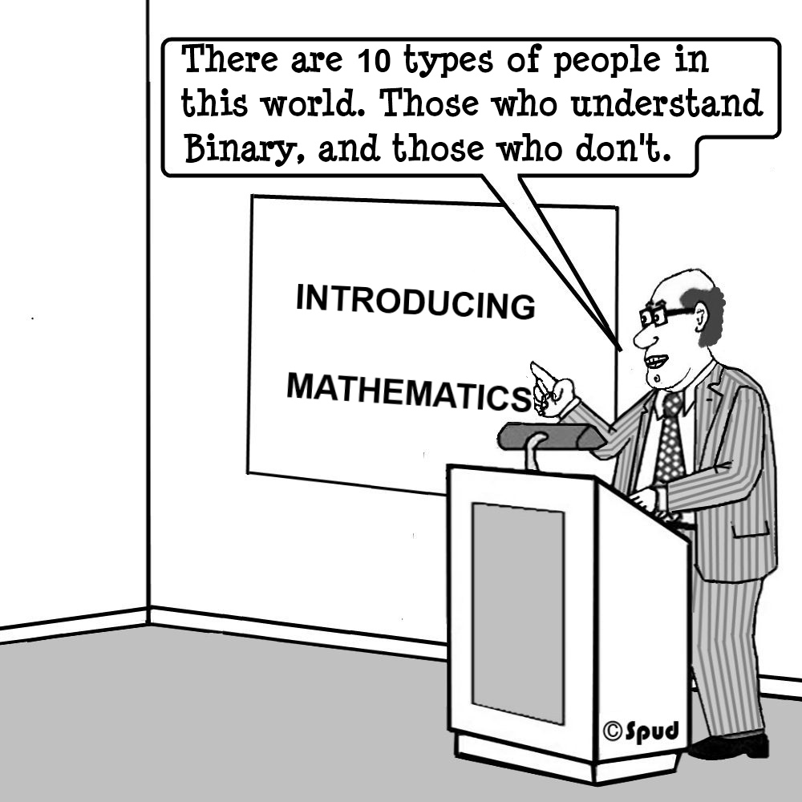

Тестирование кода в Python
Шорин Александр / @kxepal
Тестирование - тема холиворная

Тестирование - тема холиворная
- Тестировать или не тестировать
- unit или integrational тесты
- coverage: 100% или нет
- приватные фукнции: тестировать или нет
- ...и многое другое
Причины не писать тесты
- Мне за это не платят
- Это замедляет разработку
- У нас есть тестировщики
- Я не умею / не хочу / не буду
Причины писать тесты
- Оптимизация своего рабочего процесса
- Оптимизация процесса релиза продукта
- Оптимизация сложности внесения изменений
- Примеры использования кода
- Контроль исполнения сценариев использования
- Чтобы не было стыдно перед коллегами
Модульные тесты vs Интеграционные тесты
Unit tests tell a developer that the code is doing things
right;
Functional tests tell a developer that the code is doing the
right things.
Модульные тесты vs Интеграционные тесты

Coverage 100%
100% coverage tells you nothing, but less than 100% coverage
tells you something.
История unittest
- SUnit, 1994г.
- JUnit, 1998г.
- PyUnit, 1999г.
- unittest, 2001г.
Наследние SUnit / JUnit
- setUp
- tearDown
- assertTrue
- assertEqual
- assertNotEqueal
- assertGreatherEqual
- ...
Пример
import unittest
class TestStringMethods(unittest.TestCase):
def test_split(self):
s = 'hello world'
self.assertEqual(s.split(), ['hello', 'world'])
# check that s.split fails when the separator is not a string
with self.assertRaises(TypeError):
s.split(2)
if __name__ == '__main__':
unittest.main()
Почему мы не будем рассматривать unittest
- UnPythonic API
- ООП подход к тестированию
- Вводящее в заблуждение название
“Eveybody is using pytest anyway...”
-- Guido Van Rossum
В защиту unittest
- Доступен из коробки
- В Python 3.x получил расширение API: больше assert*
методов, подрбные отчеты сравнений, подтесты
pytest
- Pythonic
- Прост для использования
- Автоматический поиск и запуск тестов
- Поддержка фикстур
- Параметеризация тестов
- Конфигурация тестов на уровне подпакетов
- Подробная документация
- Более 300+ плагинов
Что такое Pythonic?
| unittest |
pytest |
| assertTrue(X) |
assert X |
| assertIs(X, True) |
assert X is True |
| assertEqual(X, Y) |
assert X == Y |
| assertNotEqual(X, Y) |
assert X != Y |
| assertGreaterEqual(X, Y) |
assert X >= Y |
| assertIn(X, Y) |
assert X in Y |
pytest: фикстуры
@pytest.fixture(scope='global')
def sc():
sc = SparkContext()
yield sc
sc.stop()
@pytest.fixture(scope='module')
def hivectx(sc):
return HiveContext(sc)
@pytest.fixture(scope='function')
def df(sc):
df = sc.parallelize([[1, 2, 3] * 5]).toDF()
return df
def test_etl(df):
...
pytest: конфигурация
+ tests /
+-- classifiers/
+-- __init__.py
+-- conftest.py
+-- test_age_clasifier.py
+-- test_gender_clasifier.py
+-- conftest.py
+-- test_pipeline.py
Никогда не импортируйте из conftest!
Полагайтесь на магию.
pytest-плагины
- cagoule - тестирует только релевантные изменения
- cov - отчет по покрытию кода
- sugar - красивый cli интерфейс
- flake8, isort, pylint - контроль стиля кода
- xdist - распределенное выполнение тестов
- aiohttp, mongodb, postgresql, mysql, asyncio, ...
Сотни их!
Давайте что-ниудь по-тестируем
def qsort(list_):
if len(list_) <= 1:
return list_
head = qsort([x for x in list_[1:] if x < list_[0]])
tail = qsort([x for x in list_[1:] if x > list_[0]])
return head + [list_[0]] + tail
(да, в жизни все сложнее)
Тестируем
def test_empty():
assert qsort([]) == []
def test_sort():
assert qsort([3, 2, 1]) == [1, 2, 3]
def test_sorted():
assert qsort([1, 2, 3]) == [1, 2, 3]
Генерация данных
@pytest.mark.parametrize(('value', 'result'), [
([], []),
([1, 2, 3], [1, 2, 3]),
([3, 2, 1], [1, 2, 3]),
])
def test_qsort(value, result):
assert qsort(value) == result
Вроде всё работает
$ pytest test_qsort.py
plugins: sugar-0.9.0
test_qsort.py::test_qsort[value0-result0] ✓ 33% ███▍
test_qsort.py::test_qsort[value1-result1] ✓ 67% ██████▋
test_qsort.py::test_qsort[value2-result2] ✓ 100% ██████████
Проблемы
- Мы проверили поведение для конкретных случаев.
- Сколько еще нужно данных, чтобы убедиться в корректности
работы функции?
- А оно точно работает?
Property Based Testing
- Это как QuickCheck
- Вместо проверок “ожидание-результат” проверяете свойства
результата
- Fuzzing? Да, похоже!
QuickCheck
- Изначально написан на Haskell
- Основывается на научно-исследовательских работах
- Позиционируется как библиотека для автоматического
тестирование функций на основе спецификаций и свойств
данных
- Портирован на Scala, Erlang, Clojure, JavaScript...
- http://www.cse.chalmers.se/~rjmh/QuickCheck/
Как оно работает (примерно)
passed
+-----------------------+
v |
+-----------+ sample +------+ failed +----------+ +--------+
| Generator | --------> | Test | --------> | Shrinker | --> | Report |
+-----------+ +------+ +----------+ +--------+
| ^ sample | ^
| +------------------+ |
| |
+-----------------------------------------------------------+
success
Нельзя просто взять и написать правильный QuickCheck
- https://github.com/agrif/pyquickcheck
- https://github.com/Cue/qc
- https://github.com/dbravender/qc
- https://github.com/futoase/PyQCheck
- https://github.com/JesseBuesking/pythoncheck
- https://github.com/markchadwick/paycheck
- https://github.com/msoedov/quick.py
- https://github.com/npryce/python-factcheck
- https://github.com/Xion/pyqcy
- https://github.com/zombiecalypse/qcc
- https://pypi.python.org/pypi/pytest-quickcheck
- ...
Hypothesis
- Библиотека для Property-тестирования
- Генерирует данные за вас
- Определяет пограничные случаи за вас
- Находит наименьший набор данных ломающий тест
- Заботится о скорости и качестве ваших тестов
- Гибок, расширяем, удобен
- Интеграция с pytest из коробки!
Тестируем свойства
@given(st.lists(st.integers()))
def test_qsort(input_list):
sorted_list = qsort(input_list)
assert len(sorted_list) == len(input_list)
for item in sorted_list:
assert item in input_list
input_list.remove(item)
assert len(input_list) == 0
assert all(sorted_list[i - 1] <= sorted_list[i]
for i in range(1, len(sorted_list)))
И находим ошибку
@given(st.lists(st.integers()))
def test_qsort(input_list):
sorted_list = qsort(input_list)
> assert len(sorted_list) == len(input_list)
E assert 1 == 2
E + where 1 = len([0])
E + and 2 = len([0, 0])
Стратегии в Hypothesis
>>> integers().example()
-150670313531850699691400483021473874929
>>> integers(min_value=-1, max_value=100).example()
-1
>>> integers(min_value=0).filter(lambda i: i % 2 == 0).example()
106140
Стратегии в Hypothesis
>>> integers().example()
-150670313531850699691400483021473874929
>>> integers(min_value=-1, max_value=100).example()
-1
>>> integers(min_value=0).filter(lambda i: i % 2 == 0).example()
106140
Стратегии в Hypothesis
>>> integers().wrapped_strategy
WideRangeIntStrategy()
>>> integers(min_value=42, max_value=100).wrapped_strategy
BoundedIntStrategy(42, 100)
>>> integers(min_value=-5, max_value=100).wrapped_strategy
integers(min_value=0, max_value=100) \
| integers(min_value=-5, max_value=0)
Стратегии в Hypothesis
>>> floats(min_value=-1, max_value=1).example()
0.6611503674557068
>>> floats().example()
-inf
Стратегии в Hypothesis
>>> text().example()
'\U000cea1b\x1b\x0c(0\U000a90eb\x08\x1d'
>>> text(string.hexdigits).map(str.upper).example()
'A5BBF104DAD1FC9EFCAF1'
>>> text(characters(whitelist_categories={'Lu', 'Ll'})).example()
'𝜰ϥ𞤘ϹｙⰢû𝒈ʖꝖ'
Стратегии в Hypothesis
>>> from_regex('^(?:not )?to beer$').example()
'to beer\n'
>>> from_regex(
... '^\d{2} bottles of beer on the (?:wall|table)'
... ).example()
'๙۲ bottles of beer on the table\U00072e0b\x00&$'
Стратегии в Hypothesis
>>> arrays(dtype=np.float16,
... shape=3,
... elements=floats(0, 1)).example()
array([ 0.45361328, 0.45361328, 0.97607422], dtype=float16)
>>> cols = columns(['a', 'b'], dtype=np.float16)
>>> rows = tuples(floats(0, 1), floats(0, 1))
>>> data_frames(cols, rows).example()
a b
0 0.446045 0.578613
1 0.600098 0.611328
Стратегии в Hypothesis...их много!
| tuples |
binary |
one_of |
| lists |
datetimes |
sampled_from |
| dicts |
times |
builds |
| fixed_dictionaries |
decimals |
permutations |
| sets |
namedtuples |
from_type |
| iterables |
uuids |
choices |
Пользовательские стратегии
@st.composite
def path_absolute(draw, segment_strategy=None):
"""Generates strictly absolute paths per :rfc:`3986#3.3`::
path-absolute = "/" [ segment-nz *( "/" segment ) ]
"""
acc = ['/']
num_segments = draw(st.integers(min_value=1, max_value=255))
acc.append(draw(segment_nz(segment_strategy)))
acc.extend(draw(st.lists(
segment(segment_strategy).map(partial(operator.add, '/')),
max_size=num_segments - 1 or 0,
)))
return ''.join(acc)
Пользовательские стратегии
def url():
return st.builds(build_url, scheme(), authority(), path(),
query(), fragment())
def authority():
return st.builds(build_authority, userinfo(), host(), port())
def userinfo():
return st.builds(build_userinfo, username(), password())
def username():
return st.text().map(quote)
Health Checks
- data_too_large: ограничивайте размер генерируемых данных;
- filter_too_much: слишком строгая фильтрация, пересмотрите
подход к генерации данных;
- too_slow: слишком медленная генерация, скорее всего из-за
больших данных;
- hung_test: тест работает больше 5 минут;
Health Checks - test run deadline
def test_fun(sc, rows):
df = sc.parallelize(rows).toDF()
...
test.py::test_fun
hypothesis_temporary_module_a95cb91fb51532e1e8b5af575d554e4d39:24:
HypothesisDeprecationWarning: Test took 4335.64ms to run. In future
the default deadline setting will be 200ms, which will make this an
error. You can set deadline to an explicit value of e.g. 4400 to
turn tests slower than this into an error, or you can set it to None
to disable this check entirely.
Что же делать?
- Пишите тесты!
- Тестируйте через Public API, избегайте приватных методов;
- Тестируйте в первую очередь реальные примеры использования, бизнес кейсы;
- Закрывайте unit-тестами ситуации, которые сложно воспроизвести, либо они редки;
- Стремитесь к coverage 100%, но не будьте им ослеплены;
- Пользуйтесь здравым смыслом и будьте проще;
Ссылки
- pytest
https://pytest.org
- Hypothesis
http://hypothesis.works/
- Hypothesis Talks
https://github.com/DRMacIver/hypothesis-talks
- How I handled Erlang R18 Maps with QuickCheck
https://vimeo.com/143849945
Спасибо за внимание!
Спрашивайте свои ответы!